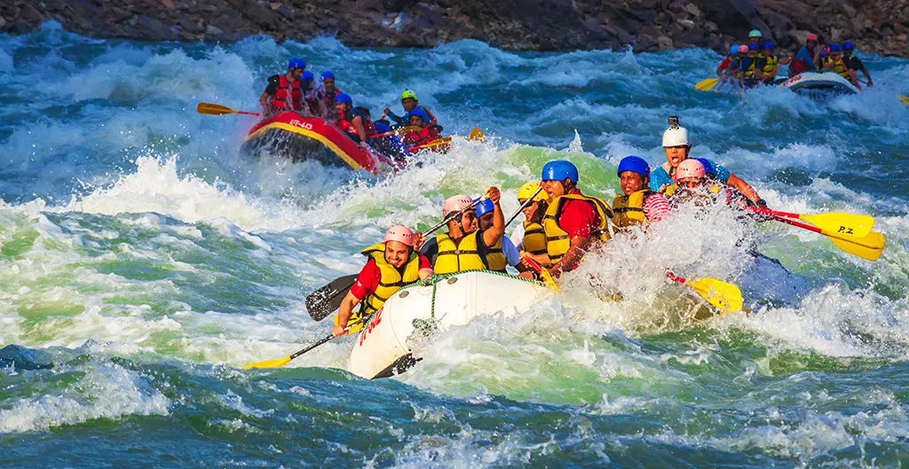
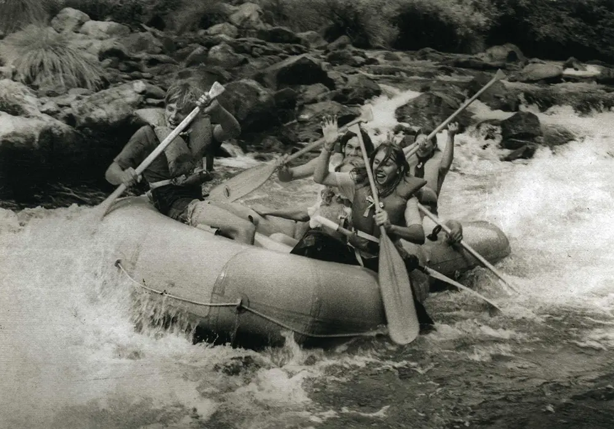
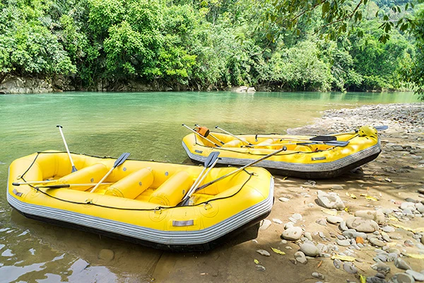
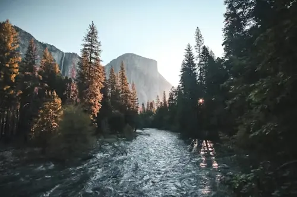
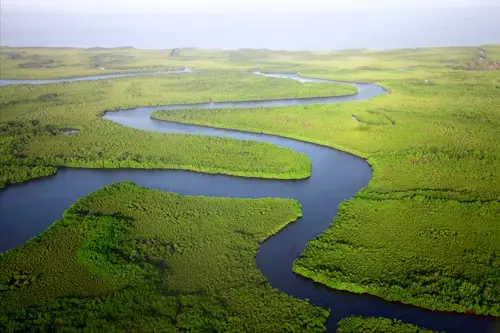
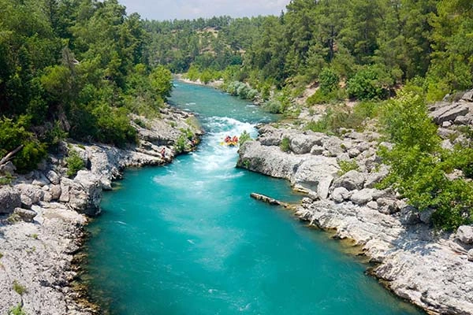
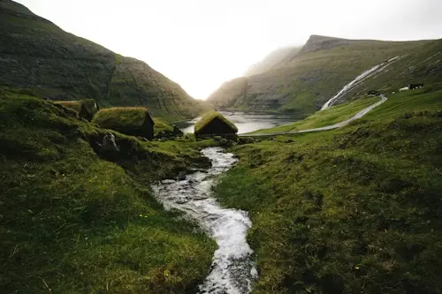

Our goal is to provide you with the best experience possible. We have been creating unforgettable trips for over 30 years with expert guides and a safety-first approach.

Our goal is to provide you with the best experience possible. We have been creating unforgettable trips for over 30 years with expert guides and a safety-first approach.
Dry Oar started rafting the river in 1995. We are a family-owned and operated business committed to providing you with the best experience possible.

Our guides and safety-first approach have helped thousands of guests enjoy unforgettable whitewater adventures over the years.




